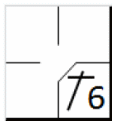
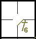
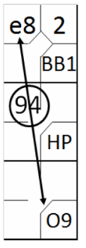
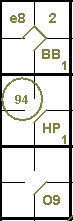
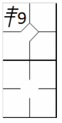
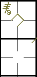

Erreurs exemptées.
Il s'agit d'erreurs dont les effets sont compensés par le même défenseur ou un coéquipier ; autrement
dit, la défense parvient néanmoins à forcer l'élimination. Ces erreurs ne sont donc pas comptabilisées contre le joueur qui
les a commises et ne sont par conséquent pas signalées sur la feuille de scorage. Elles déterminent cependant la continuité
du jeu lors des doubles ou triples jeux.
AUCUNE ERREUR N'EST, imputée, conformément à la règle 9.12(d) de l'OBR
(il s'agit des « erreurs exemptées ):
-
du receveur lorsque ce dernier, après avoir reçu un lancer, exécute un mauvais relais
en essayant d’empêcher un vol de base, à moins que ce mauvais relais ne permette au coureur voleur de gagner une ou
plusieurs bases supplémentaires ou à un autre coureur de gagner une ou plusieurs bases
[OBR9.12(d)(1)].
-
d’un défenseur qui exécute un mauvais relais si, selon son jugement, le coureur n’aurait
pas pu être retiré sur un relais précis et avec un effort ordinaire, à moins qu’un tel mauvais relais ne permette à
un coureur d’avancer au-delà de la base qu’il aurait dû atteindre si le relais n’avait pas été mal exécuté.
[OBR9.12(d)(2)].
-
d’un défenseur qui exécute un mauvais relais en tentant de compléter un double ou un
triple jeu, à moins qu’un tel mauvais relais ne permette à un coureur d’avancer au-delà de la base qu’il aurait dû
atteindre si le relais n’avait pas été mal exécuté.
[OBR 9.12(d)(3)].
Commentaire:
lorsqu’un défenseur manque un relais qui, attrapé aurait complété un double ou un triple
jeu, le scoreur officiel doit attribuer une erreur au défenseur qui a manqué la balle et une assistance au défenseur
qui a exécuté le relais.
[OBR 9.12(d) Comment].
-
d’un défenseur lorsque, après avoir manqué un roulant, un fly ou un relais, reprend la balle
à temps pour retirer un coureur forcé à n’importe quelle base, ou
[OBR 9.12(d)(4)]. Peu importe que ce soit le même joueur ou un autre qui réalise l'élimination ou la passe
décisive. Si l'erreur a des conséquences néfastes, elle doit être sanctionnée.
-
Un certain nombre d'erreurs concernent spécifiquement le lanceur et le receveur. Il ne
s'agit pas d'erreurs à proprement parler, mais de lancers irréguliers ou de lancer fou pour le lanceur, et de balles
passées pour le receveur.
[OBR 9.12(e), (f)(1),(2)].
Exemple 76:
Le frappeur envoie une balle au sol profonde vers l'arrêt-court qui la récupère et rate son lancer vers la
première base.
Le scoeur officiel estime que, même si le lancer avait été parfait, le frappeur-coureur aurait néanmoins atteint
la première base en toute sécurité, et il se voit donc accorder un coup sûr.
Aucune erreur n'est imputée, car le lancer manqué n'a eu aucun effet sur le résultat de l'action.
|

|
action {
batter -> 1B6
}
|

|
Exemple 77:
Avec un coureur en première base, le frappeur envoie une fly vers le joueur de champ centre, qui rate la prise
mais récupère la balle à temps pour éliminer le coureur en lançant en deuxième base.
Dans ce cas, aucune erreur n'est imputée, car le joueur de champ a récupéré la balle à temps pour éliminer le
coureur lors d'un jeu forcé, et l'erreur de jeu n'a eu aucun effet sur l'issue du jeu.

|
action {
batter -> BB
}
action {
batter -> O8
,
runner1 -> 84
}
|

|
Exemple 78:
Avec un coureur en première et un autre en deuxième base, le frappeur envoie une balle en hauteur vers le
champ centre, qui la rate. Le champ droit, posté à proximité, récupère la balle à temps pour éliminer le coureur
parti de la première base en la relançant en deuxième base. Le coureur en deuxième base avance alors en troisième.
Dans ce cas, on attribue l'assistance au défenseur du champ droit et l'élimination au défenseur de la deuxième
base. Comme l'avancement du coureur de la deuxième à la troisième base a été rendu possible uniquement par la réception
manquée de la balle, une erreur de base supplémentaire sera imputée au défenseur du champ centre. Veuillez inscrire
une note sur la feuille de scorage pour expliquer cette situation.
|

|
action {
batter -> BB
}
action {
batter -> HP
,
runner1 -> +
}
action {
batter -> O8
,
runner1 -> 94
,
runner2 -> e8
}
|

|
Exemple 79:
Avec un coureur en troisième base et moins de deux retraits, le frappeur frappe une fausse balle au champ gauche.
Le défenseur du champ gauche laisse tomber la balle délibérément pour empêcher le coureur de troisième base de marquer
après la prise. Le frappeur reste au bâton, sans que le marqueur n'inscrive l'« erreur de réception ».
|

|
action {
batter -> 3B9
}
|

|